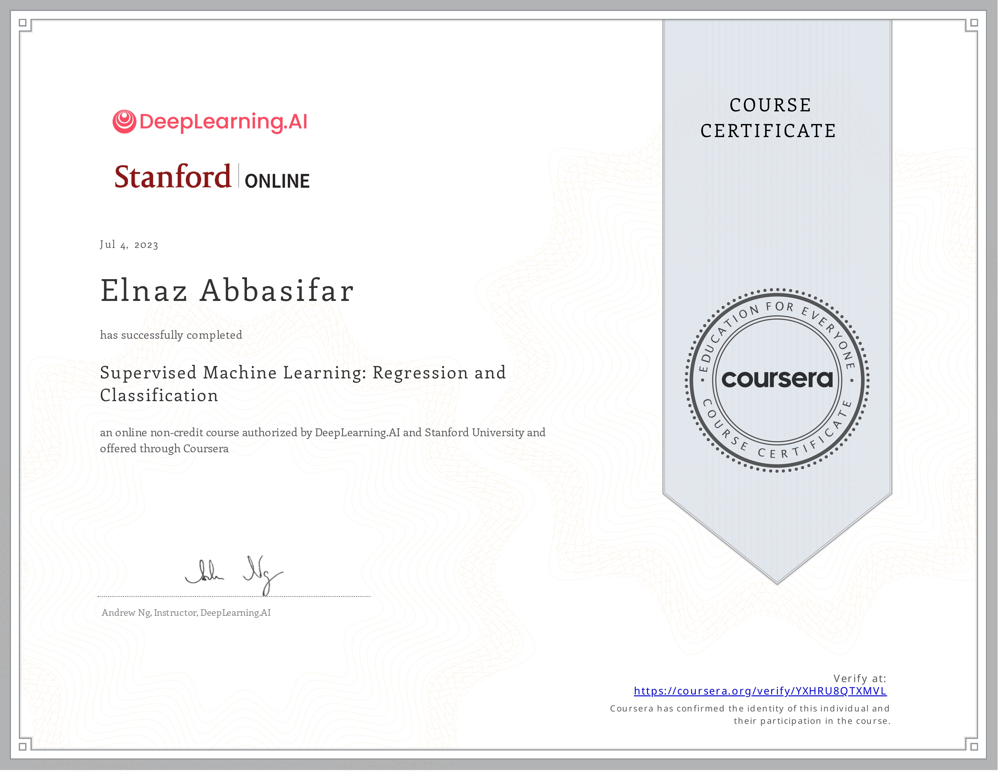
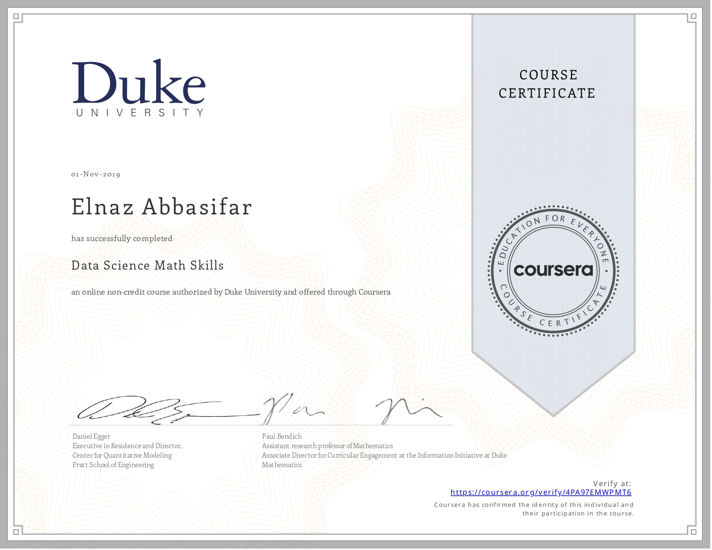
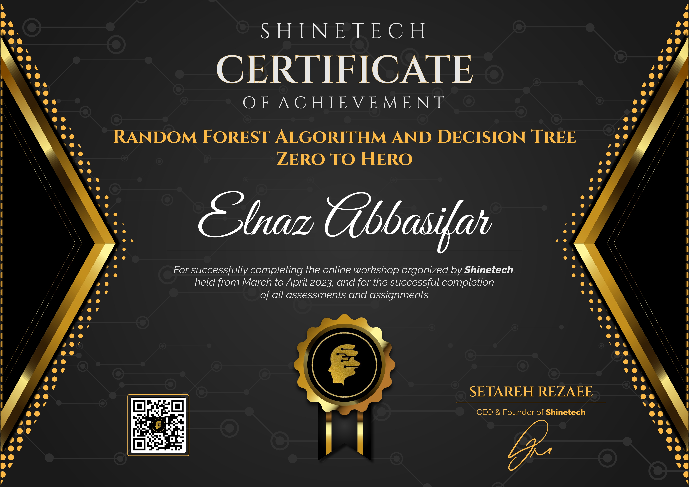
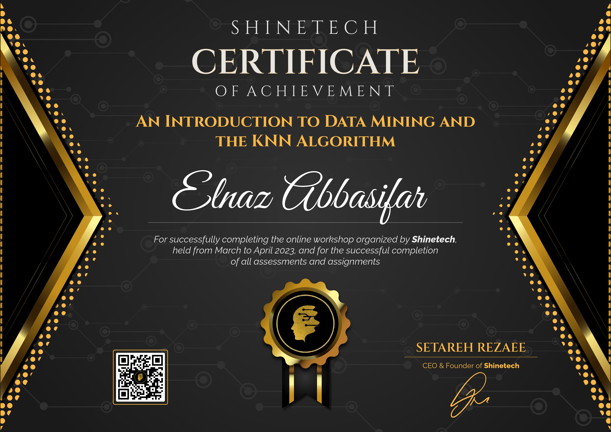

Academic Background & Training
- Artificial Intelligence Autumn School (English-medium), Amirkabir University of Technology, Iran (2021)
- Resource-Aware Machine Learning, 5th International Summer School, TU Dortmund University, Germany (2020)
- Security of Things (SeThi 2020), University of Rostock, Germany (2020)
- Lviv Data Science Summer School, Ukrainian Catholic University, Ukraine (2020)
Publications
E. Abbasifar, A. Shayan
The Impact of Social Network Applications on Customer Trust in Small Businesses with the Mediating Role of Brand Reputation: A Structural Equations Modeling Approach (Case Study: Modiseh Online Store). 2nd International Conference on Interdisciplinary Studies in Management & Engineering, University of Tehran, 2020.
E. Abbasifar
New Applications of Soft Computing Technologies and Soft Data Mining in Bioinformatics: A Review. 2nd International Conference on Advances in Engineering and Basic Sciences, London, UK, 2015.
Research Experience
AI Researcher — Technology Studies Institute, Tehran, Iran (Feb – Sep 2021)
- Conducted a comparative analysis of global AI ecosystems, identifying and ranking sustainability-related indicators.
- Collaborated with interdisciplinary scientists to integrate insights across computer science, policy, and management.
Graduate Researcher (Master’s Thesis) — Payame Noor University, Tehran, Iran (2016 – 2018)
- Conducted research on social network analysis as part of MSc thesis.
Certificates





×

Projects
Tree-Structured Graph Classification with GNN — 2025
Precision in Cardiovascular Risk Prediction: A Lasso Regression Approach — ShineTech, 2023
Advanced Prediction using Ensemble Learning Techniques — ShineTech, 2023
EDA Seattle Area Traffic Collision Data — Data Circles, 2020
Work Experience
BPM Data Analyst — Pegah Aftab, Tehran, Iran (Apr 2021 – Present)
- Designed and implemented business processes and UI components using C# and React.
- Analyzed workflows and authored technical documentation to support process optimization.
BI Developer — Pegah Aftab, Tehran, Iran (Jun – Dec 2024)
- Developed interactive dashboards in Power BI to visualize key performance metrics and support decision-making.
Data Science Intern (Python) — T25 Company, Tehran, Iran (Nov 2020 – Jan 2021)
- Developed Python scripts to automate data collection, processing, and analysis.
SQL Developer / BPM Developer — Payam Mashregh, Esfahan, Iran (2014 – 2017)
- Supervised a 9-member development team in optimizing processes and workflows.
- Implemented SQL queries to automate workflows and support data-driven decision-making.